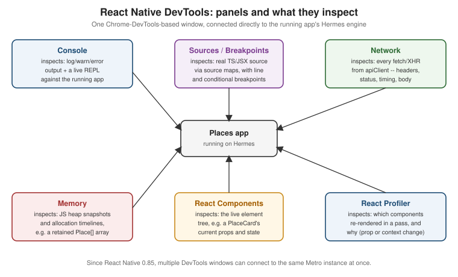

Debugging and DevTools
|
This content was generated with the assistance of AI and should be verified against the official documentation before being relied on in production. |
Getting Started with React Native introduced the Dev Menu and Fast Refresh just enough to get Places running; this page covers debugging in full — every panel React Native DevTools exposes, what disappeared from the toolchain in recent releases (Flipper, the remote Chrome debugger), debugging the native iOS/Android layers underneath the JavaScript thread, debugging an optimized or release build once Metro’s usual affordances are gone, and how Places itself catches, reports, and recovers from errors in production with an error boundary and Sentry.
The Dev Menu
Shaking a physical device, or pressing Cmd+D (iOS Simulator) / Cmd+M (Android emulator on macOS), opens the Dev Menu on a development build (Expo Go exposes the same menu through its own UI). Its entries:
-
Reload — re-executes the JS bundle from scratch, discarding all in-memory state; the blunt-instrument fallback for the rare change Fast Refresh cannot hot-swap, or for a debugger session that has gotten out of sync with the running app.
-
Fast Refresh — on by default, not a menu action itself but a toggle here: saving a file re-renders just the changed component tree in place, preserving component state, while a change outside a React component (a module-scope constant, a non-component function) triggers a full reload automatically instead.
-
Show/Hide Element Inspector — an on-device overlay that highlights the native view under the tap and shows its resolved layout box and style properties, without leaving the running app; useful for a quick "why is this view 8 points too far left" check that does not need a full DevTools session.
-
Show/Hide Performance Monitor — an overlay reporting the JS thread’s and the UI thread’s frame rate live, which is where a Places
FlatListscreen that starts dropping frames during a fast scroll first shows up as a number rather than a subjective "feels janky". -
Open React Native DevTools — on a development build, opens the standalone DevTools window covered below directly, without a separate
--dev-clientflag or manual URL.
LogBox
LogBox is the full-screen, in-app error and warning overlay: an uncaught JS error, an unhandled promise
rejection, or a console.warn/console.error call renders as a dismissible red (error) or yellow (warning)
overlay directly on top of the running app, with a stack trace pointing back at the source line (already
mapped through Metro’s source map, not the bundled/minified line) and, at the top, the component stack that led
to it. It is deliberately intrusive in development — it is meant to be seen, not scrolled past in a terminal — and it is compiled out of a release build entirely, which is exactly why a release build needs the crash
reporting and error boundary strategy covered later on this page instead of relying on LogBox to ever appear in
production.
A warning that is expected and cannot be fixed immediately (a deprecation notice from a third-party dependency
Places has not yet upgraded past) is suppressed narrowly with LogBox.ignoreLogs([…]), matched against the
warning’s own text, rather than silencing every LogBox warning globally:
import { LogBox } from 'react-native';
LogBox.ignoreLogs(['ViewPropTypes will be removed']); // narrow, dependency-specific, revisited on upgradeReact Native DevTools
React Native DevTools is the standalone debugger built into React Native itself since 0.76 — a Chrome-DevTools-based window, opened from the Dev Menu’s "Open React Native DevTools" entry or by pressing j in the Metro terminal, that connects directly to the running app’s JS engine (Hermes) over the Chrome DevTools Protocol. Its panels:
| Panel | What it inspects |
|---|---|
Console |
|
Sources / Breakpoints |
The actual TypeScript/JSX source (via source maps, never the bundled output) with line breakpoints, conditional breakpoints, and step-in/step-over/step-out, exactly like debugging a webpage in Chrome. |
Network |
Every |
Memory |
Heap snapshots and allocation timelines for the JS heap, for tracking down a growing retained-object count
(a subscription Places forgot to unsubscribe, a closure holding onto a stale |
React Components |
The live React element tree with each component’s current props and state, mirroring the React DevTools
browser extension — inspecting a |
React Profiler |
Records a render pass and shows which components re-rendered and why (a changed prop, a changed context
value), which is where a Places screen that re-renders every |

Since React Native 0.85, DevTools supports multiple simultaneous connections: a physical device and a simulator (or two simulators) can each open their own DevTools window against the same Metro instance at once, which matters the moment a bug reproduces only on one platform and needs to be compared side by side against a build that does not show it, instead of disconnecting one to inspect the other.
What is gone: Flipper and the remote Chrome debugger
Two older debugging paths are no longer part of a current React Native project and should not appear in new setup instructions:
-
Flipper — the standalone desktop debugging app Meta shipped for several years — has been removed from React Native’s default templates; React Native DevTools now covers the console/network/layout-inspection use cases Flipper plugins used to cover, built directly into the framework instead of a separate app requiring its own native integration per platform.
-
The remote Chrome debugger (
Debug JS Remotely, running the JS engine inside a Chrome tab rather than on the device) has been removed entirely — it ran the app’s JavaScript in V8 inside Chrome rather than in Hermes on the device, which meant a bug could depend on which of the two engines was running and disappear or change shape between debugging and production. React Native DevTools debugs the actual on-device Hermes engine directly, closing that gap.
Debugging Native Code
The panels above cover the JavaScript thread; a bug in the native iOS/Android layer underneath it (a crash inside a Turbo Native Module, a native view failing to mount, a permissions dialog never appearing) needs the platform’s own tooling instead.
Xcode and Android Studio
Opening ios/Places.xcworkspace in Xcode or android/ in Android Studio after npx expo prebuild (or
directly, under the Community CLI) attaches each IDE’s own debugger to the native process hosting Places's JS
bundle — breakpoints in `HapticTap’s native Turbo Module implementation, Instruments/Android Profiler for
native memory and CPU, and each platform’s own crash symbolication all work exactly as they would for a fully
native app, because from the native debugger’s point of view that is exactly what is running.
# Android: stream the device/emulator's native + JS log output live
adb logcat "*:S" ReactNative:V ReactNativeJS:V
# iOS Simulator: manage/inspect simulators from the command line
xcrun simctl list devices
xcrun simctl launch booted com.irurueta.placesadb logcat filtered to ReactNative:V ReactNativeJS:V is the fastest way to see Places's own
console.log output and any native-side log lines interleaved, when a full DevTools session is not
necessary — particularly useful for a crash that happens before Metro or DevTools ever connects.
xcrun simctl is the command-line counterpart on iOS: listing booted simulators, launching Places
(com.irurueta.places) directly by bundle id, or grabbing a screenshot/video of a specific reproduction step
without touching Xcode’s GUI at all.
The debugOptimized Android variant
A plain debug build runs unminified JS and Hermes bytecode with every debugging affordance on, which makes it
too slow and too different from what ships to reliably reproduce a performance bug; a plain release build
runs the real optimized/minified output but strips the debugging affordances entirely. Android’s
debugOptimized build variant sits between the two: it runs the same optimized, minified JS bundle and
Hermes bytecode a release build ships, while keeping Chrome DevTools Protocol / Hermes debugging attached — the variant to reach for when a bug only reproduces under release-level optimization but still needs a
debugger attached to catch it, rather than debugging blind against installed release APKs.
Debugging Release Builds with Source Maps
A release build’s JS bundle is minified, so a crash’s stack trace by default names t, n, and line 1 rather
than usePlaces, placesApi.ts, and the actual source line. Metro emits a source map alongside a release
bundle (--sourcemap-output under the Community CLI, or automatically as part of an EAS/Expo release build);
symbolicating a raw stack trace back through that source map — either with npx react-native
symbolicate-crash against a captured crash log, or automatically once a crash-reporting SDK’s own build-step
integration has uploaded that same source map (covered next) — is what turns an unreadable release stack trace
back into the exact Places source line that threw.
Error Boundaries, Global Error Handlers, and Crash Reporting
None of the above helps once Places is installed on a user’s device with no debugger attached at all — that is what an error boundary, a global error handler, and a crash-reporting SDK are for, together covering the three ways Places can fail once it has shipped: a render-time error inside the React tree, an error outside of React entirely (a rejected promise, a native crash), and turning either one into a stack trace a developer can actually read afterward.
PlacesErrorBoundary
A React error boundary is a class component (still the only component type that can implement this lifecycle) that catches a render-time error thrown by any of its descendants, replacing the crashed subtree with a fallback UI instead of taking the whole app down to a white screen:
// src/app/PlacesErrorBoundary.tsx
import { Component } from 'react';
import type { ErrorInfo, ReactNode } from 'react';
import { Pressable, StyleSheet, Text, View } from 'react-native';
import * as Sentry from '@sentry/react-native';
interface PlacesErrorBoundaryProps {
children: ReactNode;
}
interface PlacesErrorBoundaryState {
hasError: boolean;
}
export class PlacesErrorBoundary extends Component<PlacesErrorBoundaryProps, PlacesErrorBoundaryState> {
state: PlacesErrorBoundaryState = { hasError: false };
static getDerivedStateFromError(): PlacesErrorBoundaryState {
return { hasError: true };
}
componentDidCatch(error: Error, errorInfo: ErrorInfo): void {
Sentry.captureException(error, { extra: { componentStack: errorInfo.componentStack } });
}
private handleReset = (): void => {
this.setState({ hasError: false });
};
render(): ReactNode {
if (this.state.hasError) {
return (
<View style={styles.container}>
<Text style={styles.title}>Something went wrong</Text>
<Text style={styles.message}>Places hit an unexpected error. Your saved places are safe.</Text>
<Pressable style={styles.button} onPress={this.handleReset}>
<Text style={styles.buttonLabel}>Try again</Text>
</Pressable>
</View>
);
}
return this.props.children;
}
}
const styles = StyleSheet.create({
container: { flex: 1, alignItems: 'center', justifyContent: 'center', padding: 24 },
title: { fontSize: 18, fontWeight: '700', marginBottom: 8 },
message: { fontSize: 14, color: '#666', textAlign: 'center', marginBottom: 16 },
button: { paddingVertical: 10, paddingHorizontal: 20, borderRadius: 8, backgroundColor: '#2d6a34' },
buttonLabel: { color: '#fff', fontWeight: '600' },
});getDerivedStateFromError runs during render to swap in the fallback UI as early as possible;
componentDidCatch runs afterward, as a side effect, which is why it — not getDerivedStateFromError — is
where the Sentry report happens. PlacesErrorBoundary wraps RootNavigator once, near the top of App.tsx,
so a render-time error anywhere in the navigation tree is caught in one place rather than needing a boundary per
screen:
// src/app/App.tsx (excerpt)
import { ThemeProvider } from '../theme/ThemeProvider';
import { RootNavigator } from '../navigation/RootNavigator';
import { PlacesErrorBoundary } from './PlacesErrorBoundary';
export default function App() {
return (
<ThemeProvider>
<PlacesErrorBoundary>
<RootNavigator />
</PlacesErrorBoundary>
</ThemeProvider>
);
}An error boundary only catches errors thrown during render, in a lifecycle method, or in a constructor below
it in the tree — it does not catch an error thrown inside an event handler (a Pressable’s `onPress), inside
an async callback, or a native crash. Those need the global handlers below instead.
Global Error Handlers
React Native installs its own default handler for an error that reaches the top of the JS call stack without
being caught anywhere; overriding it — to route the same error through Sentry before (or instead of) React
Native’s own default red-screen behavior — uses ErrorUtils, the global React Native already exposes for
exactly this:
// src/lib/sentry.ts (excerpt)
import * as Sentry from '@sentry/react-native';
const defaultHandler = ErrorUtils.getGlobalHandler();
ErrorUtils.setGlobalHandler((error: Error, isFatal?: boolean) => {
Sentry.captureException(error, { tags: { fatal: Boolean(isFatal) } });
defaultHandler(error, isFatal);
});An unhandled promise rejection (an await placesApi.addPlace(input) whose rejection nothing catch`es) does not
go through `ErrorUtils at all; @sentry/react-native’s own initialization (below) attaches the
`unhandledrejection listener needed to report those the same way, without Places wiring a second handler
for it by hand.
Crash Reporting: Sentry
Places initializes Sentry once, at app startup, before anything else renders:
// src/lib/sentry.ts
import * as Sentry from '@sentry/react-native';
Sentry.init({
dsn: 'https://<key>@o0.ingest.sentry.io/<project>',
tracesSampleRate: 0.2,
debug: __DEV__, // verbose Sentry SDK logging only in development, never in a shipped build
});tracesSampleRate controls what fraction of transactions Sentry’s performance monitoring captures (0.2 here
trades some sampling completeness for lower overhead and quota use); debug: DEV is a reasonable default
for the SDK’s own diagnostic logging — verbose while iterating locally, silent in anything a user actually
installs. Crashlytics (Google’s own crash reporter, more commonly reached for on an Android-only or
Firebase-already-in-use project) plays the same role as Sentry here — a componentDidCatch/ErrorUtils report
call, an initialization step, and a symbolication story for release stacks — so the wiring above transfers
directly if Places used it instead.
A captured exception is only as useful as its stack trace is readable: getting a symbolicated stack trace
back for a native release build — the actual Places source file and line, not a minified t/n — requires
the matching source map to have reached Sentry before the crash that needs symbolicating, which happens as a
build-step concern: the Sentry Expo/Metro plugin (or sentry-cli invoked directly) uploads the release
bundle’s source map to Sentry as part of the build, not at app runtime. PlacesErrorBoundary and the global
handlers above only decide what gets reported and when — CI/CD
and Over-the-Air Updates (later in this section) is where that upload step is actually wired into the release
pipeline.
DevSettings and DEV
DEV is a global boolean, true in a development build and compiled to false in a release build, and is
the standard gate for any code that should only run, or only be reachable, outside of production:
if (__DEV__) {
// e.g. seed AsyncStorage with sample Places data on first launch, skipped entirely in a release build
seedSamplePlaces();
}DevSettings is the companion API for interacting with the Dev Menu itself from code — most usefully,
DevSettings.addMenuItem adds Places's own custom entry to it, for a development-only action too specific to
warrant a UI button (clearing the local places cache, forcing a re-sync against the backend):
import { DevSettings } from 'react-native';
if (__DEV__) {
DevSettings.addMenuItem('Clear places cache', () => {
placesRepository.clear();
DevSettings.reload(); // same effect as choosing "Reload" from the Dev Menu itself
});
}DevSettings.reload() triggers the same full JS reload the Dev Menu’s own "Reload" entry does, callable from
anywhere in code — useful right after an action (like clearing a cache) that leaves in-memory state
inconsistent with what should be reloaded from scratch.